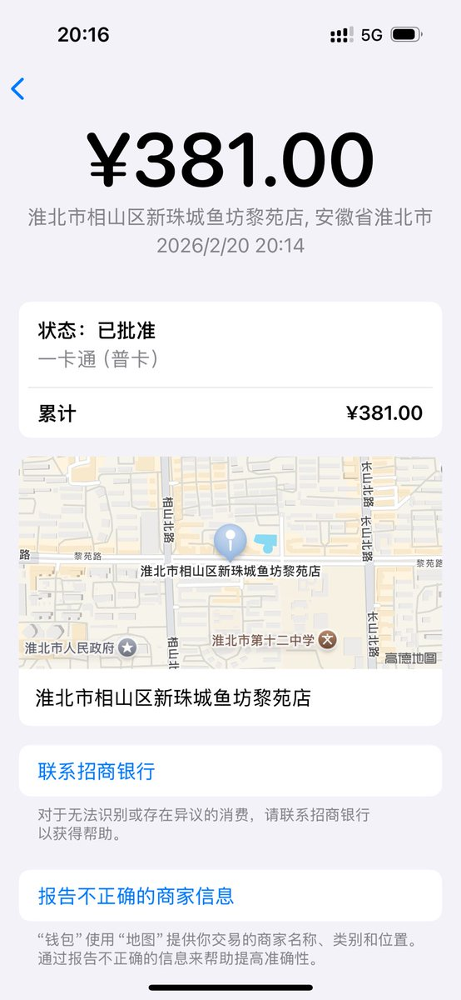

奶昔🥤
@realNyarime
@Lain75442 一般来说万事达的免密额度只有50刀，超过以后就要输pin

Lain_玲音
@Lain75442
在饭店使用Apple Pay付款
收银员本来以为POS机没有这个功能，然后是我教她们怎么用这种方式收款，支付成功后她们还说很神奇。果然国内对NFC支付的普及程度还是太低了，以至于绝大多数店员都不知道自己的POS机可以这样用（）
不过不知道为什么明明已经打开免密支付还是要在POS机上输入密码 https://t.co/wKXN2euWIJ